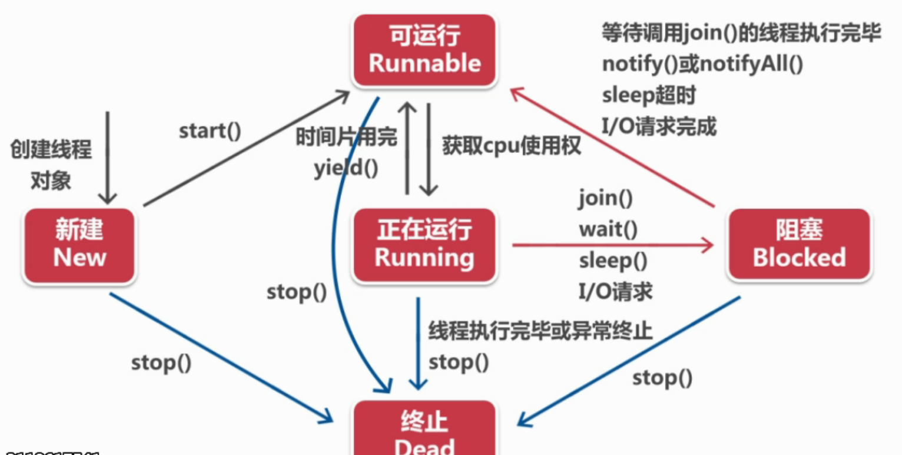

一. 线程的状态和生命周期

当执行start方法时，说明线程已进入可运行阶段，等待获得cpu使用权，
当cpu开始执行该线程时，说明该线程进入运行阶段。
1. 运行到阻塞的方法--sleep()
sleep的使用场景：
1.线程执行过快----放慢执行速度，用于计时。
2.每次线程执行刷新结果相同，可以让线程隔一段时间执行刷新一次，避免资源浪费。
另外，休眠时间为1000ms，再运行时有一个等待执行的时间，所以线程实际终止的时间超过1000ms，在写时钟类程序时，会发现时间越跑越慢了。
2. 运行到阻塞的方法--join()
join抢占执行(插队执行)，调用join的线程优先执行，执行结束后，其他线程才可以执行。
当 A 线程执行到了 B 线程的 join 方法时, A 就会等待, 等 B 线程执行完, A 线程才会执行
join 可以用来临时加入线程执行
3. 停止线程 -- interrupt()
stop 方法已经过时不用,只有一种结束方式 -- run 方法结束
因为线程运行代码一般都是循环,只要控制循环结束即可。（线程结束 -- run方法结束 -- 循环结束）
对于普通函数，直接用 flag控制循环结束即可。
flag结束线程
但是这种方法在同步函数中就不适用了，当同步函数中存在wait()、sleep()等使线程阻塞的方法时，线程阻塞，就不会读取到标记，线程就不会结束。
这时就需要用interrupt方法强制将线程唤醒，强制让线程从阻塞状态转为运行状态，获得CPU执行权
使用interrupt强制唤醒线程后，需要在catch中处理--即操纵标记让线程停止。
while (flag) {
try {
// 两个线程都在这里卡住
wait();
} catch (InterruptedException e) {
System.out.println(Thread.currentThread().getName() + ".....Exception");
// 线程被强制唤醒后，interrupt 后要进行处理
changeFlag();
}
System.out.println(Thread.currentThread().getName() + ".....run");
}
4.守护线程 -- setDeamon()
守护进程是什么？
守护进程又叫后台进程，后台进程开启后,和前台线程共同抢劫CPU的执行权运行,前台进程和后台进程的开始/运行都是一样的,只有结束方式不同守护进程的作用？
主线程是一个前台进程，后台进程依赖于前台进程，所有前台进程全部执行完后，后台进程就会结束，将程序关闭，而不是悬着死锁。
就像输入流是一个前台进程，输出流是一个守护进程，当输入流线程执行完毕后，输出流也自动释放。守护线程的特点？
- 必须在启动线程前调用
- 当正在运行的线程都是守护线程时，JVM 退出
5. 暂时停止线程 -- yield()
当前线程放弃CPU执行权
稍微减缓线程的运行,使线程能够平均的运行
使线程交替运行,
即:00000000111111111 ===> 01010101010101010101
注意事项
- wait 和 sleep 方法的区别？
wait 释放 CPU 执行权，释放锁，
sleep 释放 CPU 执行权，不释放锁
二. 线程优先级
sleep和join方法都是操作获得cpu使用权，通过手动设置方法，有没有更简便的方法，让某些线程优先执行呢？
1.Java为线程类提供了10个优先级，优先级可以用整数1-10表示,超过范围会抛出异常，主线程默认优先级为5 -- 通过Thread.currentThread.toString()看线程详细信息
2.三个优先级常量代表1,5,10
3.虽然设置了优先级，但由于机器的不同，进程的执行结果仍然具有随机性，不能完全保证优先级高的一定优先执行。
4.尤其是在循环次数很少的情况下，优先级的影响力 < 启动顺序.
改变线程优先级